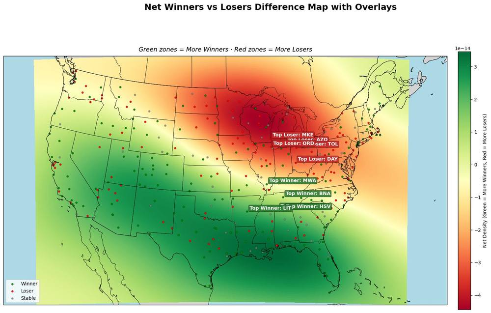
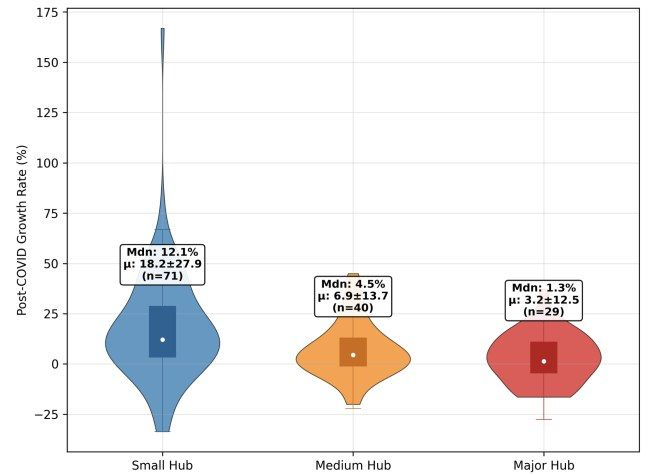

Data & decisions Transportation systems Independent research
Did COVID-19 temporarily disrupt American air travel — or permanently change which airports matter?
Aviation theory says big hubs win permanently, because scale and connectivity compound: more routes attract more passengers, which fund more routes. COVID was the largest shock the system has ever absorbed.
When the hierarchy re-formed, did it snap back to where it was — or did it move?
Built a reproducible pipeline over sixteen years of the U.S. DOT’s T-100 Market filings — a monthly, carrier-by-route record of how many passengers flew between any two airports. Sixteen years of that is not an analysis dataset, and getting from one to the other was most of the work.
The union of every origin and destination code gives 1,038 airports, each classified against FAA thresholds by its share of national enplanements — at least 1% major, 0.25% medium, 0.05% small, otherwise non-hub. On top of that sit three analyses: hub performance, the route network as a graph, and a constructed measure of why people were flying.
Worked alone, in Python. Every figure on this page comes out of the notebooks.
Small hubs recovered faster than major hubs, and the gradient runs cleanly down the hub classes. Comparing each airport’s 2023–24 passenger average against its own 2018–19 baseline:
A Kruskal–Wallis test across the three classes gives H = 11.69, p = 0.009. Mood’s median test was run separately to confirm the medians specifically rather than the distributions: p = 0.0082. In passenger terms the small-hub cohort went from an average of 114 million journeys a year to 158 million.


This is a two-period comparison, not a causal model. It shows that the hierarchy moved, not why.
Hub category explains under 1% of the variance in airport growth, so class membership is a weak predictor for any individual airport. Small hubs are only 8–10% of U.S. enplanements, making this a relative shift rather than a takeover. The Travel Purpose Index above is constructed, not measured. And the paper has not been accepted or published anywhere — nothing on this page should be read as peer-reviewed.